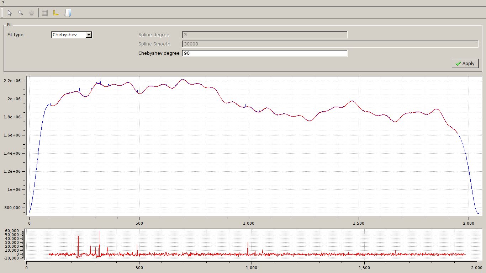

Graphical user’s interface¶
The graphical interface provides all the text functionalities and a graphical rappresentation of the datas.
The gui can be launched with the command bpcgui or from the “tools” menù of DW.
Interface elements¶
Toolbar buttons¶
- Open file: start the open directory dialog.
- Selection:
- Rectangle zoom: zoom on the selected area
- Parameters: open a dialog to set some visualization parameter
- Grid: open a dialog to set some grid visualization parameter
- Axis style: open a dialog to set some axis visualization parameter
- Get preflag: open a file preflaged by DW
- Fit: open the fit window
- Apply: apply the correction curve to all, or part of, the data files in the directory
Main window¶

The main window, as we can see in the picture, is divided in five areas:
Current¶
Is a information box with information about:
- feed
- section
- polarization
- frequency
- bandwidth
- file for the preflag
Dataset¶
Is a selector for the working dataset:
- feed
- section
- polarization
The apply button set the selected dataset. It will set the dssel parameter that we saw in the Text user’s interface.
List¶
Is a list of the files in the observation directory with checkbox.
Here we can select which file we are working with and which files use to make the correction curve.
Selection¶
The selection box is divided in two subboxes:
- Range settings
- Fit range
The range setting can be used to set the type of observation and to set a range of spatial samples to be used for the median computation:
- type of datas: the type of observation. Values are: “On/Off”, “Cross Scan” and “Map”
- select region inf: set a number of spatial samples at the beginning of the data to be used for the median computation. A value equal to 0 means to use all available samples.
- select region sup: set a number of samples at the end of the data to be used for the median computation. A value equal to 0 means to use all available samples.
- excluded region: set a number of samples at the beginning and at the end of the data to be excluded from the computation (useful for ramps)
The select region inf and select region sup are active only if type of datas is “Cross scan” or “Map”.
The fit range is needed to set a range for the computation of the fit. The fit is computated in the region from select fit region inf and select fit region sup.
The apply button save these settings and update the plot.
{kind=link}
Fit Window¶
{kind=link}
In the toolbar there are the folowing buttons:
- Selection:
- Rectangle zoom: zoom on the selected area
- Parameters: open a dialog to set some visualization parameter
- Grid: open a dialog to set some grid visualization parameter
- Axis style: open a dialog to set some axis visualization parameter
- Save fit: save the current fit to the file “fit_data_correction.fits” in the root of the observation direcory.
The fit window is divided in two areas:
- fit settings
- view area
Fit settings¶
the fit settings are:
Fit type is a selector of the type of the fit. Current supported methods are: * Spline * Chebyshev
Spline degree and Spline smooth are free parameters for the spline method. The meaning of these parameters is explained in the Text user’s interface section.
Chebyshev degree is the degree of the Chebyshev polynomes.
The button apply starts the computation and visualizes the result in the plot area.
Plot area¶
Is the area for the visualization of the datas (blue) and of the fit (red).
Usage example¶
The operations to build the the correction file and to apply it to the raw data are the same of the text user interface case.
Opened the directory of the observation, we can browse between the files using the list widget and between feeds, sections and polarizations using the dataset box.
In the case of OTF (“Cross scan” or “Map”) data we have to set ranges of spatial samples to use, as explained in Text user’s interface.
We can then select, thanks to the checkboxes on the list widget, only the files whose median does not present excessive irregularities.
Opening the fit window from the button in the toolbar, will show the median of all the selected files concatenated.
We can now try to run some tests of fit and save the result when we are satisfied, by means of the button in the toolbar. The data will be saved in the file “fit_data_correction.fits”
Closed the fit window, and performed the same operation on the other, or all, of the feed/section/polarization combinations, we can apply the correction to all the observation files.
Now, if we open any file of the observation directory with DW, we can find the new corrected datasets.